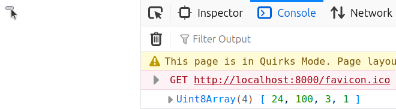

Javascript can pull data from remote servers by using something called the Fetch API. This has a couple names and concepts associated to it, like fetching, GET requests, or REST APIs. The scope of this blog post will be to
- develop a simple example for how you can use it
- to fetch a binary file
- as part of a web application.
I’ll start with an empty folder to give us a clean workspace.
~/fetch-example $ ls --all
. ..
First, we need some binary data. I’ll choose some random numbers (that fit
in the range of an unsigned byte), and we can later confirm we’ve
successfully fetched the file by looking for those numbers. I’ll use python
to write the numbers to a file named bin, and double check it
worked with od.
~/fetch-example $ python -c ‘open(“bin”, “wb”).write(bytearray([24, 100, 3, 1]))’
~/fetch-example $ od -td1 bin
0000000 24 100 3 1
0000004
Now, we need our “web application.” Let’s just have a single button, and
when it’s pressed, fetch bin and console-log its contents. I’m
putting this HTML code into ~/fetch-example/index.html:
<script>
async function log_bin() {
const response = await fetch(‘bin’);
const asbytes = await response.bytes();
console.log(asbytes);
}
</script>
<button onclick="log_bin()" />
Let’s break down what this is doing.
We have a function log_bin to log the binary file. It starts to
fetch the file bin, and awaits its completion. Then, we save
that response as bytes, awaiting here as well. Since those
awaits are
async code, the function containing them (log_bin) must be marked
async as well. Finally, we log the byte representation. The
button just calls this function.
This is our final code! Changing ‘bin’ will let us fetch any
data exposed through REST APIs or other HTTP GET calls. But to be able to
test this locally, we need to pretend to be such a server. I prefer to spin
up my local servers with python:
~/fetch-example $ python -m http.server
Serving HTTP on 0.0.0.0 port 8000 (http://0.0.0.0:8000/) ...
Now, visiting the link http://0.0.0.0:8000/ and clicking on the button logs the numbers from the start of the blog post. It works!
why is this helpful?
I chose the specific scope of this article because I’m working on a project that plans to roughly follow the above workflow. We control both the client and the server. Some data structure is serialized into binary, and is saved on the server. The client requests it from the server, deserializes it, and uses it to do business logic.